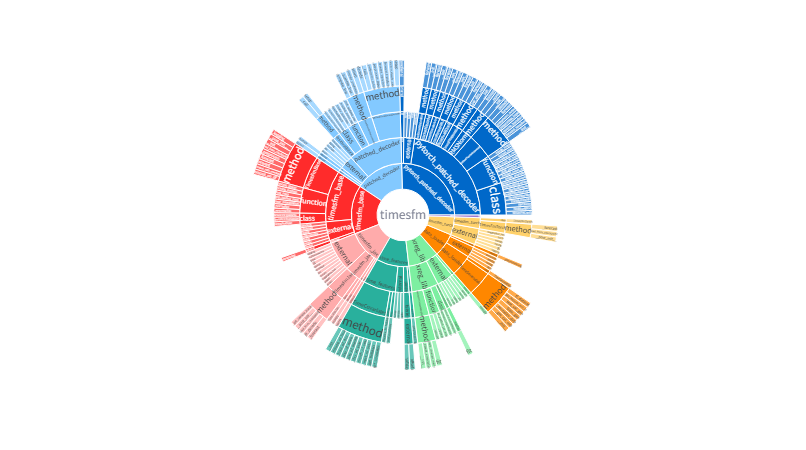

1) 入口
2) 主要メトリクス
- library: timesfm
- root_modules: [timesfm]
- files_parsed: 9
- modules: 9
- classes: 21
- functions: 22
- methods: 76
- external: 58
- nodes: 186
- edges: 241
- errors: 0
3) 抽出CSV
4) 可視化
サンバースト（階層）
ネットワーク（依存/関係）

このバンドル内の scripts/extract_from_report.py は、site/cle_report.html からテーブルを再抽出して extracted/ を更新します。
python scripts/extract_from_report.py